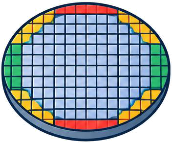
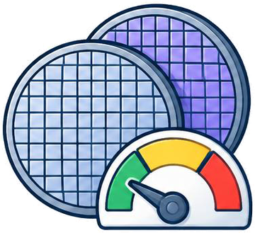
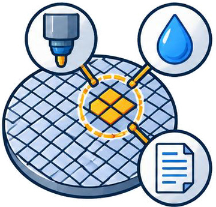
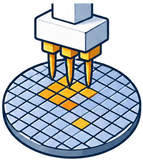
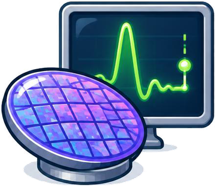
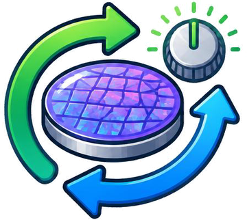
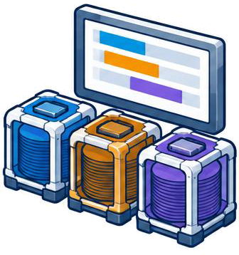
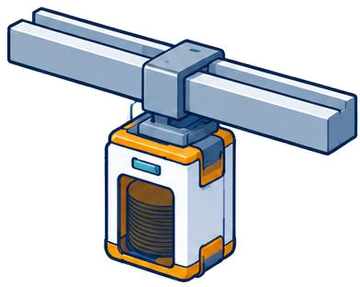
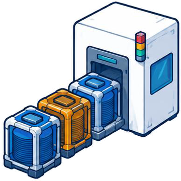
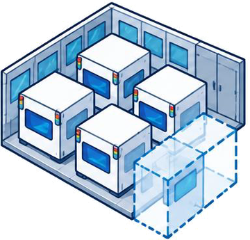

See the manufacturing context.
A wafer map, a sensor trace and a delayed quality measurement tell different parts of the story. Preserving where and when a signal occurs helps reveal what averages hide.
A SURVEY & A LIVING READING LIST
From Perception to Autonomy: A Survey on AI-Assisted Semiconductor Manufacturing
* Corresponding authors.

Our project page is online, with visual task navigation and a growing paper collection.
The survey companion and task-based reading lists are available on GitHub.
THE STORY BEHIND THE SURVEY
Making a chip takes many processing steps, precise measurements, reliable tools and coordinated factory resources. AI can help at every step. The bigger question is how its outputs improve the decisions that follow.
A wafer map, a sensor trace and a delayed quality measurement tell different parts of the story. Preserving where and when a signal occurs helps reveal what averages hide.
A prediction becomes valuable when it guides an inspection, a process adjustment, a maintenance decision or a production schedule.
One decision changes the conditions for the next. Feedback helps models and agents coordinate these effects and improve with operating experience.

A workflow can span several stages. Autonomy brings the functions it needs together with execution and feedback.
START WITH A MANUFACTURING QUESTION
Explore by scope, or search for a task. Each card opens its reading list on GitHub.
Showing all manufacturing tasks

What does the spatial pattern of failing dies reveal about a wafer?
Explore papersWhere is a defect, and what does it look like?
Explore papersWhich mask pattern will print the intended structure on a wafer?
Explore papers
Will a product meet its quality requirements?
Explore papers
What caused a loss of yield, and where should engineers investigate?
Explore papers
Which dies or locations should be tested or inspected next?
Explore papers
Is a process running normally, and when should it stop?
Explore papersCan sensor data estimate a measurement that is slow or expensive to obtain?
Explore papersWhich process settings or experiments should be tried next?
Explore papers
How should settings change after observing a process result?
Explore papersIs a tool faulty, and which fault explains its signals?
Explore papersWhen is a tool likely to fail, and when should it be maintained?
Explore papersIs a tool or chamber ready for a specified manufacturing operation?
Explore papersWhen will a lot finish, and will it be delivered on time?
Explore papers
Which job should each machine process next?
Explore papers
How should wafers move between tools?
Explore papers
Where is production constrained, and what factory state explains the delay?
Explore papersHow should cooling, power, air and water systems serve production efficiently?
Explore papers
What equipment, qualifications or factory space should be added or reassigned?
Explore papersNo tasks match that search. Try another term or reset the filters.
THE VISION
The survey points toward a digital environment where models predict the consequences of actions, agents coordinate decisions across tasks, and physical systems provide the feedback that improves them.
Moving from isolated predictions to coordinated action connects the entire story—from understanding a single wafer to operating a factory.
BUILD ON THIS WORK
@unpublished{zhong2026perception,
title = {From Perception to Autonomy: A Survey on {AI}-Assisted Semiconductor Manufacturing},
author = {Zhong, Rui and Huang, Zhikun and Zhang, Xue and Jin, Qian and Li, Yu and Sun, Qi and Gao, Dawei and Song, Yi and Wu, Hanming and Zhuo, Cheng},
year = {2026},
note = {Manuscript}
}Have a paper to add or a correction to suggest? Contributions are welcome.
Suggest a paper ↗Contribution guide ↗